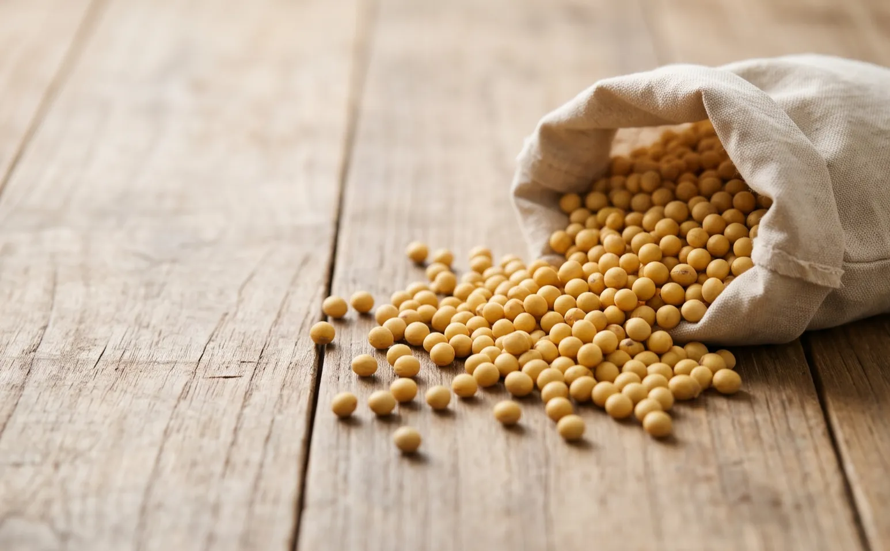
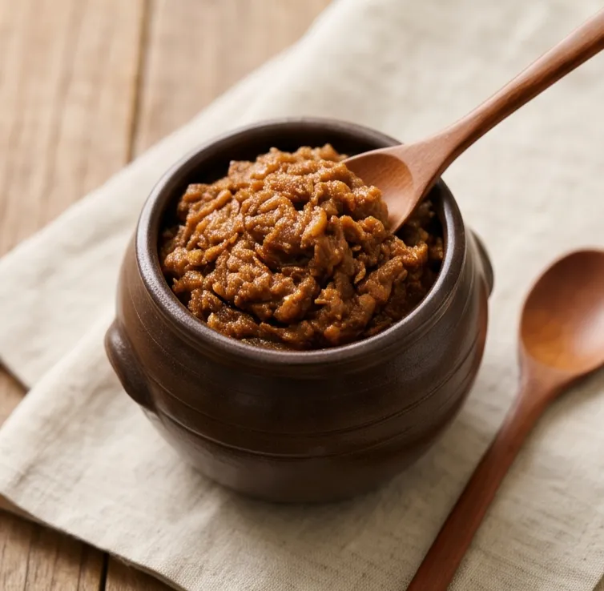
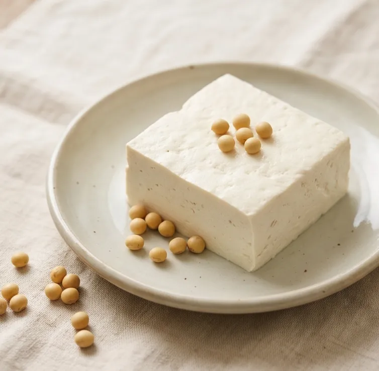
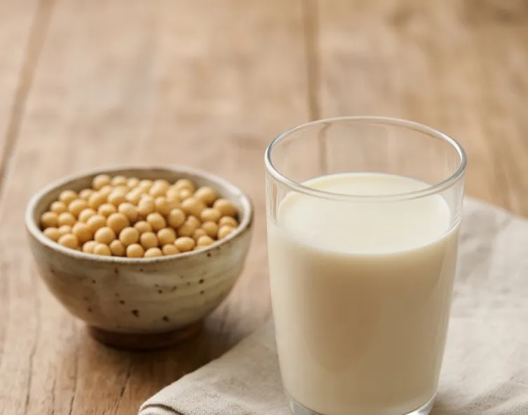

곧 예약
선풍 콩
된장·두부 담그는 노란 메주콩
가격은 예약을 시작할 때 알려 드립니다.
- 품종
- 선풍(노란 콩)
- 산지
- 전북 정읍 태인면 매계리 논
- 건조
- 직접 말림
- 양
- 생산연도
- 배송
- 택배
대량 주문·식당 거래는 → 대량 주문·협력업체 문의
품종 이야기
선풍 콩 — 된장·두부용으로 육성한 노란 메주콩.자세히
농촌진흥청이 된장·두부용으로 육성한 품종입니다. 대원콩보다 알이 굵습니다.
근거: 농촌진흥청 보급 기사(농축유통신문)
잘 어울리는 음식

메주·된장 
두부 
콩물·콩밥
선풍 콩을 고르는 이유
- 논에서 기르고 직접 말렸습니다 — 정읍 태인면 매계리.
배송·주문 안내
- 받는 날
- 받으실 날은 확정 안내에 적어 드립니다.
- 배송비
- 입금
- 확정 안내를 받으신 뒤 일 안에 계좌로 보내 주세요. 입금자명이 달라도 됩니다.
- 보관
- 서늘하고 건조한 곳에 밀폐 보관.
담았습니다. 장바구니 보기 →

식당·가게처럼 꾸준히 많은 양이 필요하시거나 대량 주문이시면 조건을 맞춰 드립니다.
대량 주문·협력업체 문의 →